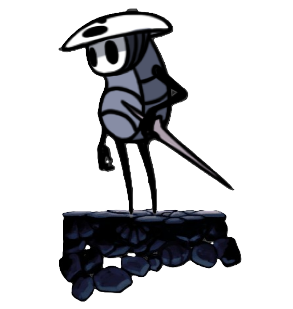

Hollow Knight é um jogo do gênero Metroidvania, subgênero dos jogos de ação e aventura, lançado em 2017 pelo time de desenvolvedores independentes do sul da Austrália Team Cherry. O jogo demorou cerca de 4 anos para ser lançado, desde o pensamento do conceito, a arrecadação de fundos e o desenvolvimento do jogo, sendo o único lançamento da equipe. O time é composto por três pessoas que foram responsáveis pela criação de praticamente todo o jogo;Ari Gibson e William Pellen, criadores de toda a parte gráfica do jogo, e as mentes por trás da criação de mundo e do level design; e Jack Vine, o principal e praticamente único programador de todo o jogo. Menções importantes a Christopher Larkin, o responsável pela trilha sonora que ambienta perfeitamente cada momento da gameplay.
Vagando pela superfície, Knight, o personagem principal, chega ao reino de Hallownest, um reino de insetos que está em ruínas assolado por uma infecção que ataca pelos sonhos e deixa os habitantes loucos, em um estado de mortos-vivos, tornando o mundo que o jogador explora uma sombra do que um dia foi. À medida que o jogador explora as entranhas do reino a história cheia de mistérios e detalhes sobre o estado do lugar vai se desdobrando, mas apenas para aqueles mais atentos, já que ela é contada nas entrelinhas.